| 日付 | 2011年11月26日（土） - 2011年11月27日（日） | ||||||
|---|---|---|---|---|---|---|---|
| 山域 | 赤城・榛名 | ||||||
| メンバー | 家族（妻、長女・0歳） | ||||||
| 山行形態 | 子連れ1泊2日ホテル泊 | ||||||
| アクセス | 車 | ||||||
| ルート (Map2) |
|
2日目
榛名山の計画を立てているときに、地図に展望絶好と書かれている臥牛山という山を発見。
往復30分とのことなので、朝一番の展望の良い時に登ってみることにする。
8:24 臥牛山登山道入口到着。標高1160m。

駐車場の脇から登山道に入っていく。
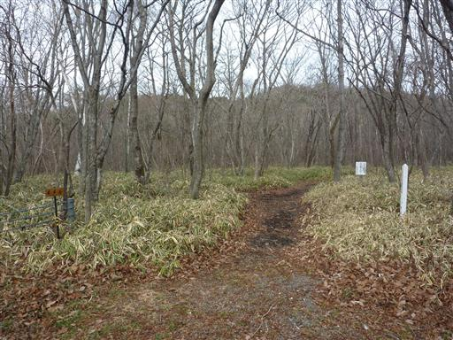
登山道入口には小さな標識がある。
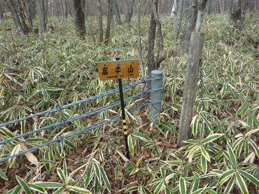
笹原の平坦な道を歩いていく。
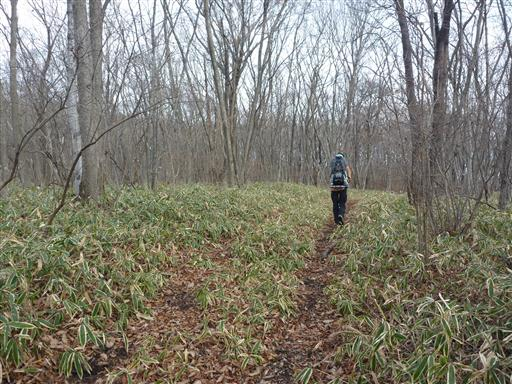
しばらく歩くと木の棒で道がふさがれていて、
右へ行くよう促す標識が立てられている。
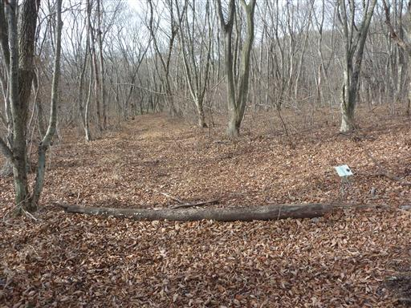
標高差はほとんどない軽い山なのだが、登山道は忠実に尾根上につけられている。
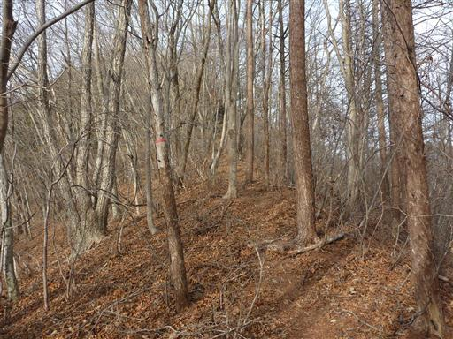
尾根をしばらく歩くと、大きな岩にたどり着く。
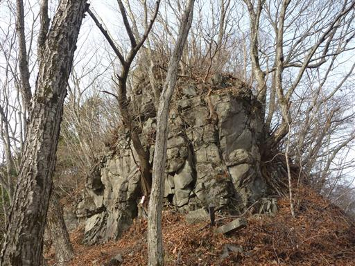
岩は左から回り込み、滑りやすい急斜面を登る。
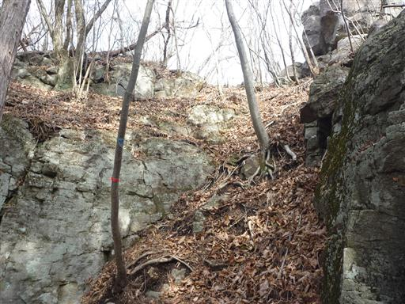
8:43 臥牛山山頂到着。標高1232m。
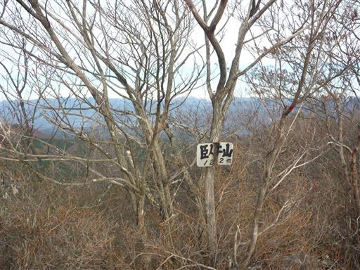
山頂からは榛名山の山々が見渡せる。
左は榛名富士、一番右はこれから登る烏帽子ヶ岳だ。
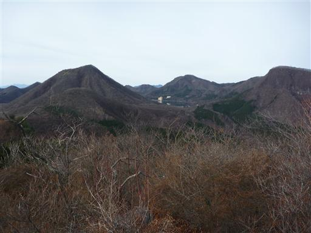
遠くの方に富士山が見えている。
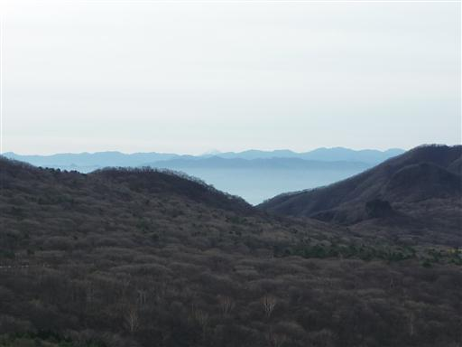
楽しみにしていた谷川連峰方面の展望は木々に邪魔されてあまり見えない。
確かに展望のよい山だが、展望絶好は言い過ぎだろう。
何事も期待のし過ぎはよくない。
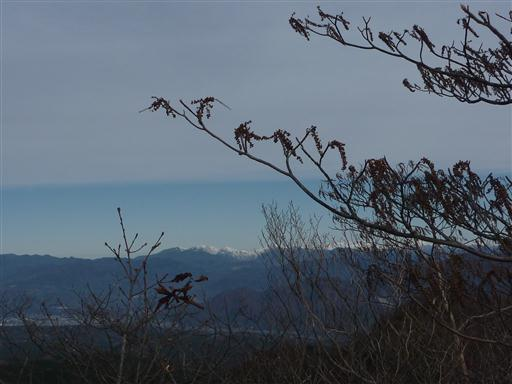
この山は一部周回ルートをとれるようなので、
先ほど棒でふさがれていたところを乗り越えて進んだところ、
笹に覆われて行き止まりになっていた。
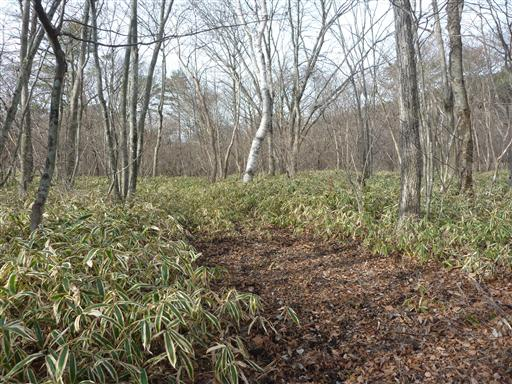
臥牛山を下山し、続いて烏帽子ヶ岳に向かう。
登山道入口付近に手頃な駐車場は見当たらなかったが、
道脇に停めても問題なさそうだ。
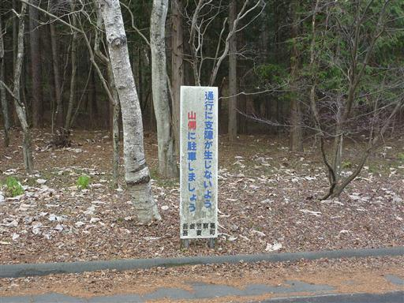
9:35 烏帽子ヶ岳登山道入口到着。標高1190m。
赤い鳥居がいくつも並んでいる。

鳥居の奥には祠があって、狐の置物が無数に並んでいる。
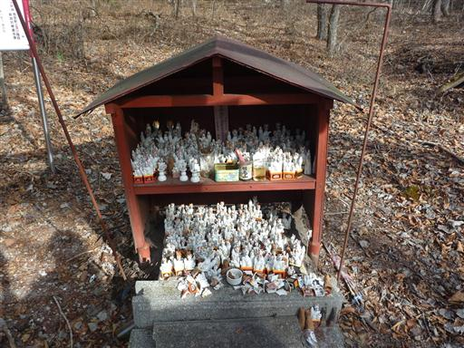
山頂までは50分程度。人通りの少ない道を登っていく。
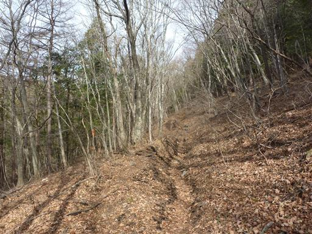
しばらく登ると尾根に到着する。
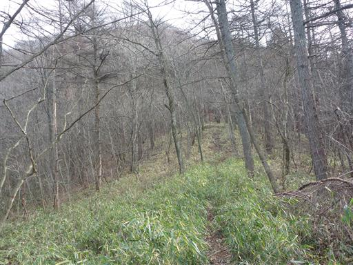
途中で赤い鳥居が立っている。榛名山はあちらこちらで鳥居を見かける。
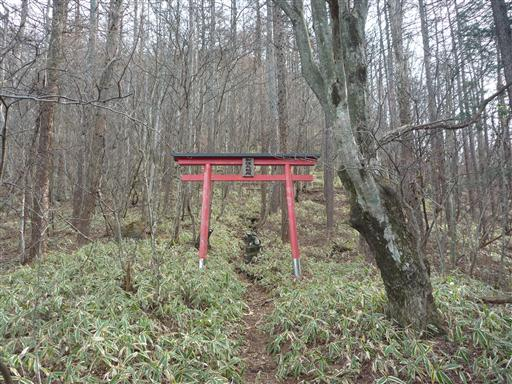
鳥居の足元には狐の狛犬が置かれている。かわいらしい狛犬だ。
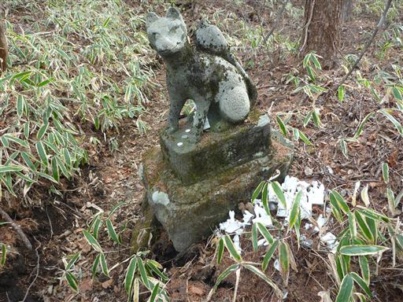
鳥居を過ぎると山頂直下まで延々と手すりが設置されている。
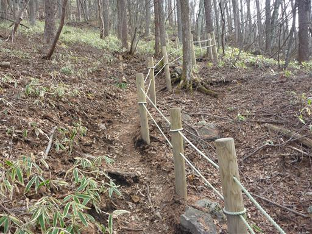
斜面が急になってくる。土が滑って歩きにくい。
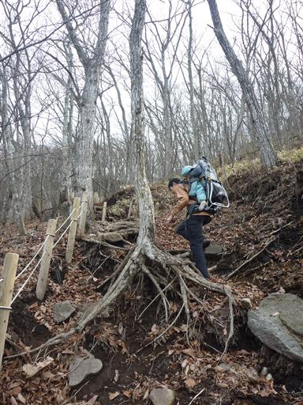
山頂直下の岩窟に到着。ここにも小さな赤い鳥居が立てられている。
足元には狐の置物が散らばっている。
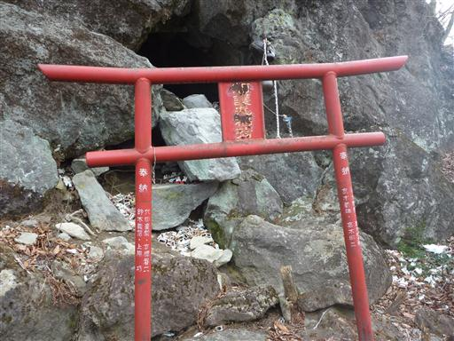
岩窟の前に鈴が掛けられている。
中を覗き込むと、小さな祠がいくつか祀られている。
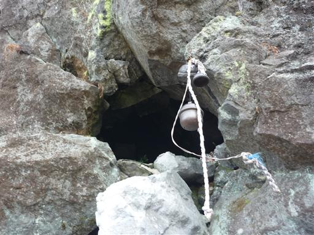
山頂付近は平坦で笹原が広がっている。
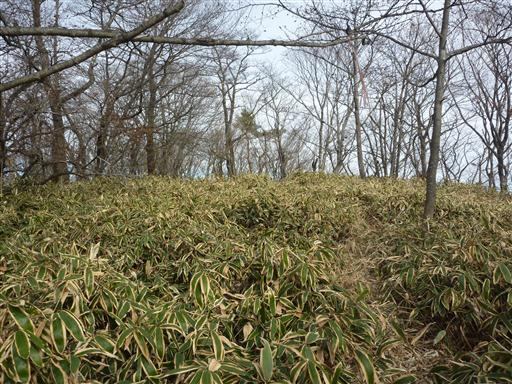
10:21 烏帽子ヶ岳山頂到着。標高1363m。
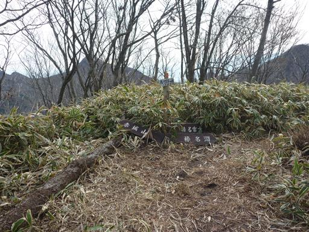
山頂から南面に少し歩くと、展望台に到達する。
南側の展望が広がる素晴らしいビューポイントだ。
左手前の盛り上がっているところが、先ほど登った臥牛山だ。
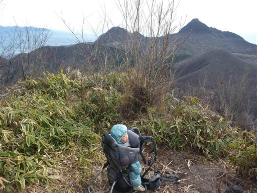
目の前には榛名富士が大きい。
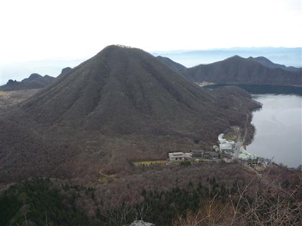
眼下に榛名湖と、その向こう側には妙義山や荒船山など西上州の山々、
遠くには富士山や奥秩父、八ヶ岳が見えている。
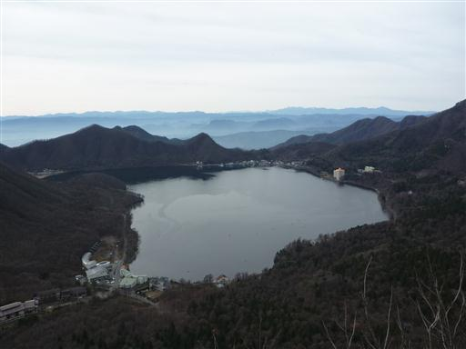
足元を覗くと、遥か下方まで崖が続いている。
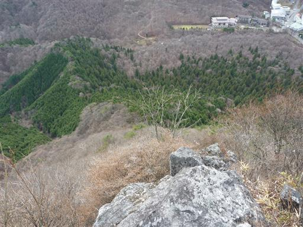
烏帽子ヶ岳を下山し、続いて鬢櫛山に向かう。
難しい字だが「びんぐしやま」と読む。
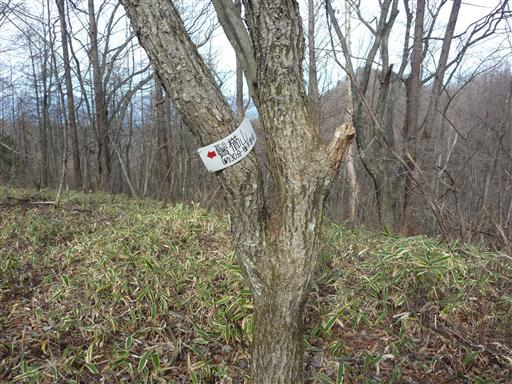
足元にすっかり元気を失ったシダ植物がだらっと寝そべっている。
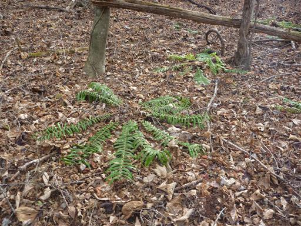
12:09 鬢櫛山山頂到着。標高1350m。
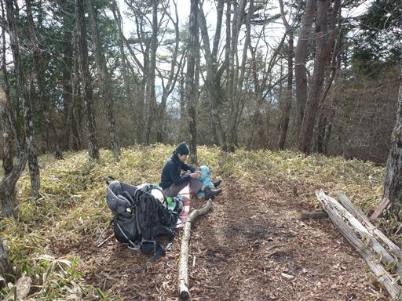
この山からはほとんど展望が開けない。一番左に見える山が烏帽子ヶ岳だ。
ここで昼食休憩をとることにする。
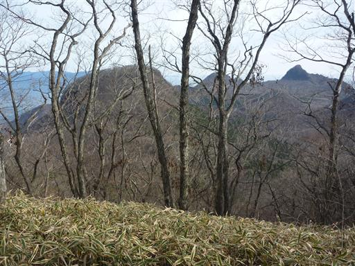
下山は、登りとは道を変えて鬢櫛山への登山道を使う。
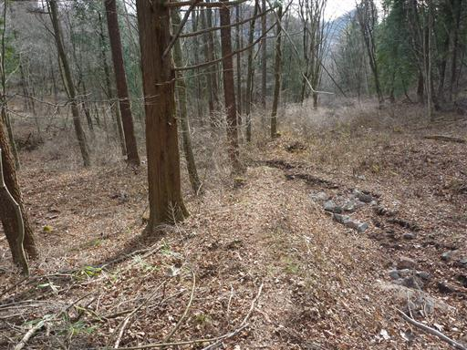
12:53 下山。
沢沿いを下っていると、登山道入口とは違う場所に出てきてしまった。

続いて榛名富士を目指す。榛名山に来たらやはりこの山に登っておかなければならない。
車を移動させるのが面倒なので、そのまま歩いて
裏側の登山口から榛名富士を往復することにする。

こちらの道は霜柱が解けてどろどろの状態で、極めて歩きにくい。
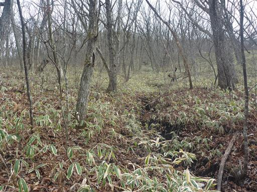
13:50 榛名富士山頂到着。標高1390m。
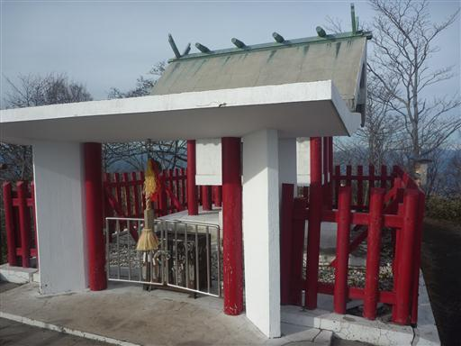
ここに来てようやく北側の展望が開ける。
少し空は白いが、谷川連峰の白い峰々が目立っている。
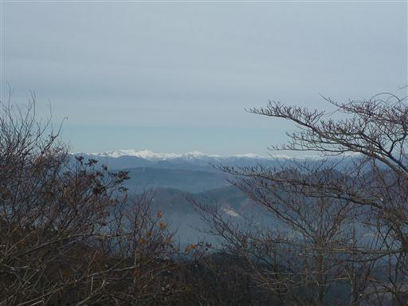
展望絶好の榛名富士山頂からは榛名の山々が見渡せる。
右に見える尖ったピークは相馬山、左は二ツ岳だ。
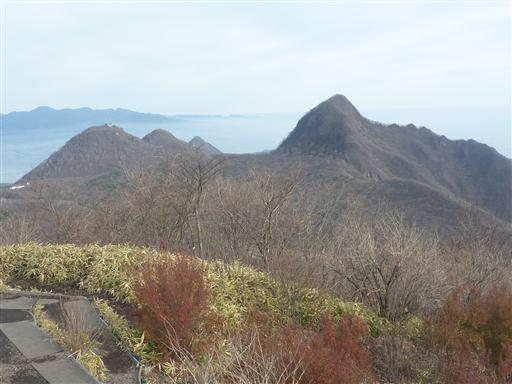
山頂は小広く開けている。ロープウェイが着くたびに、
観光客がたくさん降りてくる。
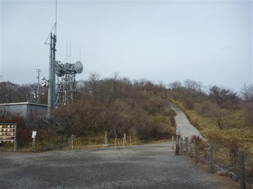
太陽が笠をかぶっている。左に光っているのは恐らく幻日だろう。
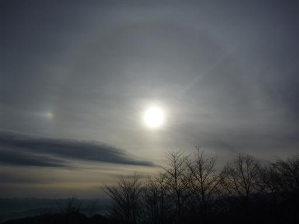
14:53 榛名富士登山道入口に下山。
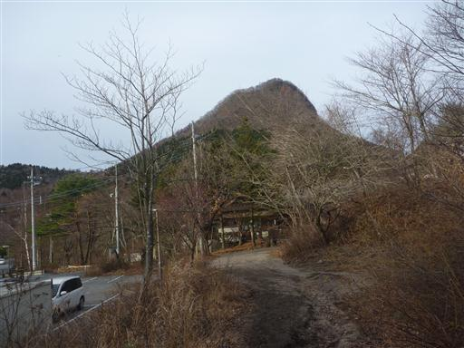
小さな山とはいえ、今日は4つも山を登ったため、疲れてしまった。
最後に榛名湖畔から榛名富士を望む。
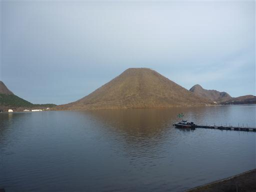
こちらは鬢櫛山と烏帽子ヶ岳。
展望に恵まれた2日間の山旅だった。
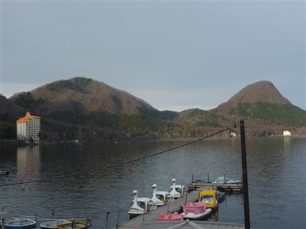